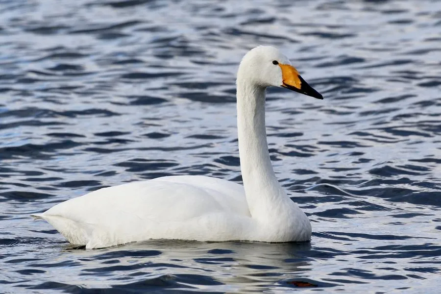

鸟类 · 动物界
大天鹅 Cygnus cygnus

体型高大的白色天鹅，喙基的柠檬黄色延伸至鼻孔前方，迁徙时排成整齐的“一”字或“人”字队形。
- 分类
- 门脊索动物门纲鸟纲目雁形目科鸭科属天鹅属
- 栖息环境
- 开阔的湖泊、沼泽、水库与沿海潟湖，繁殖期选择偏远的高纬湿地
- 地理分布
- 欧亚大陆北部繁殖，越冬于欧洲、中亚和东亚，中国山东荣成、河南三门峡为著名越冬地
- 保护级别
- IUCN 无危（LC）；中国国家二级保护动物
物种志
大天鹅体长 140–165 cm，翼展 205–235 cm，体重 8–14 kg，是体型最大的水鸟之一。全身羽毛雪白，颈长而弯曲，喙基部有明显的柠檬黄色区域，黄色向前延伸成尖角状，喙尖为黑色，眼先裸露的皮肤也呈黄色。幼鸟羽毛灰褐色，喙色较淡，要到第二年才逐渐变白。
大天鹅在欧亚大陆北部的苔原、森林湖泊和沼泽中繁殖，冬季南迁至欧洲、中亚和东亚的湖泊、水库与沿海潟湖，中国山东荣成、河南三门峡都是著名的越冬地。它们以水生植物的根茎、茎叶和谷物为食，也吃少量水生昆虫与软体动物。天鹅终身配对，每年 4–6 月在水边筑起巨大的草堆巢，每窝产卵 4–7 枚，孵化 31–36 天。飞行时，它们排成“一”字或“人”字队形，借助前方同伴产生的上升气流节省体力。
形态与习性
- 食性水生植物根茎、茎叶和谷物，也吃少量水生昆虫与软体动物
- 体长140–165 cm
- 翼展205–235 cm
- 体重8–14 kg，雄鸟更大
- 繁殖每窝 4–7 枚卵，孵化 31–36 天
- 寿命野外约 20 年，圈养可超过 25 年
- 迁徙秋季南迁，山东荣成、河南三门峡为著名越冬地
趣味知识
- 大天鹅的喙基黄色区域向前伸成尖角，可与小天鹅圆钝的黄斑区分。
- 天鹅终身配对，求偶时雌雄相对点头、展翅，动作同步如同一段舞蹈。
- 大天鹅的叫声洪亮如号角，英文名 Whooper Swan 就来自它的呼号声。
- 编队飞行时，它们轮流担任领头位置，以减少整群的飞行阻力。